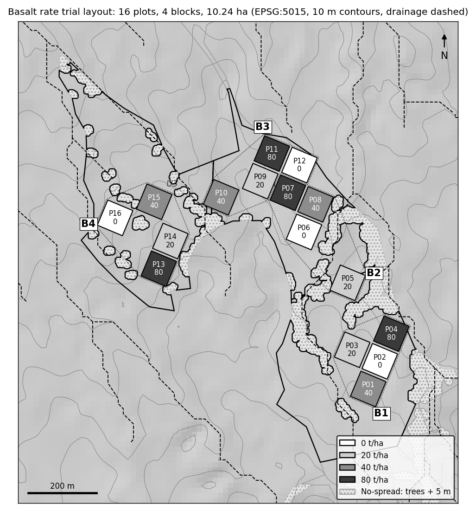
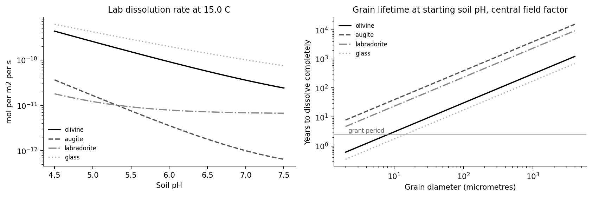
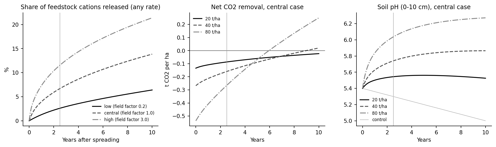
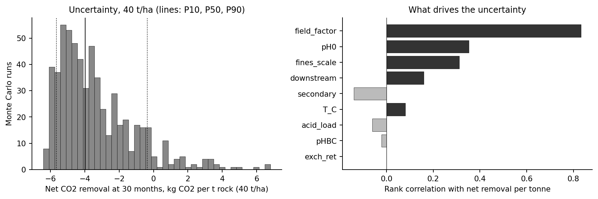
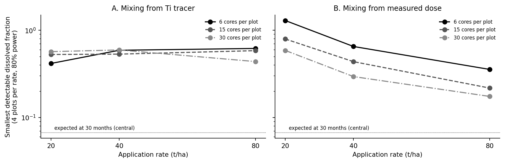
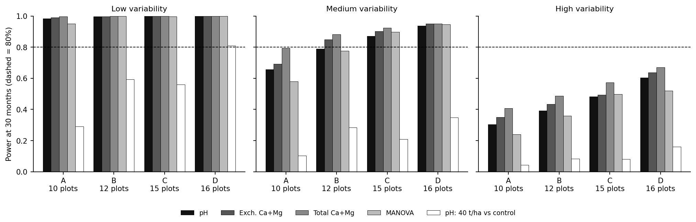
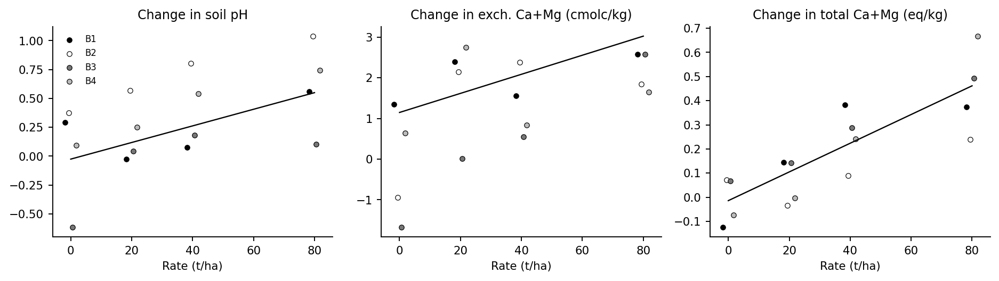

| Date | 19 November 2026 |
| Prepared by | Ilha Carbon, for the science team (MRV lead and advisors) and the land partner |
| Status | First full run. 32 parameters are placeholders: every soil and rock value comes from literature or the Marques Britas basalt until the December screening and the Tecnovia fines results arrive. Numbers here show what the model does and where the design is sensitive, not what the site will deliver. |
| Run it | python3 run_all.py (about 3 minutes). Drop filled templates into inputs/ and run again. |
The model is a set of Python modules run in sequence by run_all.py. Each stage passes its results to the next, so one change in the inputs (for example the real particle size distribution) flows through to the carbon account, the measurement design and the power analysis.
| Stage | Module | What it does | Main outputs |
|---|---|---|---|
| Site | site.py | Eligible ground from the QGIS layers; plots oriented to the slope; compact blocks along the elevation gradient; rates randomised within blocks (seed 2026); tonnage per plot | trial_plots.geojson / .gpkg / .csv, fig 1 |
| Feedstock | geochem.py | Cation charge and CO2 potential from XRF, deductions for rock carbon and sulfur, CIA and MIA, mineral cation budget with glass by difference | feedstock_potential.csv, feedstock_mineral_balance.csv |
| Kinetics | geochem.py | Shrinking-core dissolution of each mineral in each grain size, pH- and temperature-dependent rate laws | fig 2, fig 3 |
| Soil | geochem.py | Monthly balance of released cations: bicarbonate export, exchange retention, leaching with strong acids, secondary minerals, plant uptake; pH and base saturation feedback; background acid load | carbon_account_by_scenario.csv |
| Uncertainty | geochem.py | Monte Carlo over nine uncertain inputs; rank sensitivity | mc_*.csv, fig 4 |
| Metals | geochem.py | Soil mixing mass balance against screening limits | trace_metal_mass_balance.csv |
| Measurement | mrv.py | Tracer contrast, soil mass-balance detectability, lysimeter and stream signals, mesocosm design, sampling counts | tau_detectability.csv, water_signal.csv, mesocosm_design.csv, sampling_schedule_and_counts.csv, fig 5 |
| Statistics | stats.py | Power by design using the model's effects and the screening noise; the full analysis for real data | power_by_design.csv, analysis_*.txt, figs 6 and 7 |
Inputs. config.json holds every parameter with its status (placeholder, literature, design, measured). The folder templates/ has one CSV per data source. A filled CSV placed in inputs/ overrides the matching placeholder and is marked measured in outputs/parameter_status.csv. Results of the trial itself go in inputs/plot_results.csv.
Candidate ground is the open land of units U3, U4, U5 (contiguous, rated easy or workable, 90th-percentile slope under 20%). From 39 ha of footprint the layout keeps the 16 most compact 80 × 80 m plots, separated by 8 m untreated alleys. Sampling is confined to the inner 0.41 ha of each plot (8 m inset) to stay clear of spreader edges. Blocks are groups of four neighbouring plots, numbered from the top of the slope down, so the block term in the analysis absorbs the elevation, aspect and drainage gradient. The 0 t/ha plot in each block is the control; the old 0.3 ha control squares from the 100 ha plan are no longer needed. Rates are randomised within blocks, redrawn if rate lines up with slope position or plot slope (draw 7 from seed 2026; r(rate, elevation rank in block) = -0.04, r(rate, slope) = +0.04).

| Plot | Block | Rate t/ha | Unit | Area ha | Dry t | Wet t | Slope % | Elev. m |
|---|---|---|---|---|---|---|---|---|
| P01 | B1 | 40 | U5 | 0.64 | 25.6 | 27.8 | 8.8 | 441 |
| P02 | B1 | 0 | U5 | 0.64 | 0.0 | 0.0 | 15.3 | 434 |
| P03 | B1 | 20 | U5 | 0.64 | 12.8 | 13.9 | 7.7 | 434 |
| P04 | B1 | 80 | U5 | 0.64 | 51.2 | 55.7 | 16.8 | 418 |
| P05 | B2 | 20 | U4, U5 | 0.64 | 12.8 | 13.9 | 9.3 | 422 |
| P06 | B2 | 0 | U4 | 0.64 | 0.0 | 0.0 | 14.5 | 415 |
| P07 | B2 | 80 | U4 | 0.64 | 51.2 | 55.7 | 12.6 | 408 |
| P08 | B2 | 40 | U4 | 0.64 | 25.6 | 27.8 | 7.0 | 405 |
| P09 | B3 | 20 | U4 | 0.64 | 12.8 | 13.9 | 16.7 | 416 |
| P10 | B3 | 40 | U3, U4 | 0.64 | 25.6 | 27.8 | 15.7 | 409 |
| P11 | B3 | 80 | U4 | 0.64 | 51.2 | 55.7 | 12.2 | 406 |
| P12 | B3 | 0 | U4 | 0.64 | 0.0 | 0.0 | 6.8 | 401 |
| P13 | B4 | 80 | U3 | 0.64 | 51.2 | 55.7 | 9.9 | 416 |
| P14 | B4 | 20 | U3 | 0.64 | 12.8 | 13.9 | 10.0 | 413 |
| P15 | B4 | 40 | U3 | 0.64 | 25.6 | 27.8 | 10.3 | 403 |
| P16 | B4 | 0 | U3 | 0.64 | 0.0 | 0.0 | 15.0 | 397 |
Total 358.4 t dry; with 10% contingency 394.2 t dry, or 428.5 t delivered at the placeholder moisture. This is at the top of the 300 to 350 t used in the plan so far, before contingency, because 16 plots of 0.64 ha cover 10.24 ha at a mean rate of 35 t/ha. The 12-plot version (blocks B1 to B3) needs 296 t on 7.68 ha. Application rate is verified with 5 catch trays per treated plot.
Values below use the Marques Britas bulk oxides as a stand-in. They will change when the Tecnovia composites are analysed (fusion XRF, ICP-MS, XRD, PSD, moisture, carbon and sulfur, as listed in the rock testing request).
| Quantity | Value | Unit |
|---|---|---|
| Ca charge | 3.57 | eq/kg |
| Mg charge | 3.42 | eq/kg |
| Na charge | 1.10 | eq/kg |
| K charge | 0.42 | eq/kg |
| Total base-cation charge | 8.51 | eq/kg |
| Ca + Mg charge only | 6.99 | eq/kg |
| CO2 potential, gross (1 mol CO2 per eq) | 374.63 | kg CO2/t |
| Deduct: inorganic carbon in rock | 1.83 | kg CO2/t |
| Deduct: sulfide acidity (2 eq per mol S) | 0.55 | kg CO2/t |
| CO2 potential, net of rock C and S | 372.25 | kg CO2/t |
| Net potential after downstream retention (0.86) | 320.13 | kg CO2/t |
| Ca + Mg only, net, after retention | 262.53 | kg CO2/t |
| Chemical Index of Alteration (CIA) | 35.05 | fresh basalt ~35 to 45 |
| Mafic Index of Alteration (MIA) | 33.95 | fresh basalt ~35 to 45; higher = weathered |
| Oxide total | 100.60 | wt% |
The CO2 potential counts one mole of CO2 per equivalent of base cation (the bicarbonate pathway), subtracts carbon already in the rock and the acidity sulfide would generate, then applies downstream retention. Including sodium and potassium adds about 20%; the Ca + Mg line is the conservative figure. CIA and MIA near 35 indicate unweathered basalt, as expected for fresh quarry fines.
| Mineral | Assumed composition | Mass fraction | eq/kg mineral | Share of rock cations |
|---|---|---|---|---|
| olivine | Fo80 (Mg1.6Fe0.4SiO4) | 0.10 | 20.91 | 0.25 |
| augite | Ca0.9Mg0.8Fe0.3Si2O6 | 0.25 | 14.78 | 0.43 |
| labradorite | An60 (Ca0.6Na0.4Al1.6Si2.4O8) | 0.40 | 5.88 | 0.28 |
| glass | Basaltic glass per mol Si; cations by difference | 0.12 | 3.10 | 0.04 |
| oxides_inert | Fe-Ti oxides, apatite etc. (not counted) | 0.08 | 0.00 | 0.00 |
| other_inert | Fe-Ti oxides, apatite etc. (not counted) | 0.05 | 0.00 | 0.00 |
Crystalline phases are given ideal compositions; the glass is assigned whatever cations remain so that the total matches the XRF. The balance closes with a plausible glass composition. When the XRD arrives, check that the glass by difference is not negative and that its cation content is in a sensible range for basaltic glass (about 8 to 11 eq/kg); if not, the mode or the assumed compositions need revising with Juan.
Each reactive mineral dissolves at a rate per unit surface that depends on pH and temperature:
r = kacid · aH+n · exp[−Ea,acid/R (1/T − 1/298.15)] + kneutral · exp[−Ea,neutral/R (1/T − 1/298.15)]
with constants from Palandri and Kharaka (2004) for olivine, augite and labradorite and an approximation for basaltic glass after Gislason and Oelkers (2003). Grains shrink from the surface inward: the radius falls by r · λ · Vm · F per unit time, where λ is surface roughness (7), Vm the molar volume and F the lab-to-field factor. Each sieve class is split into six sub-sizes, and every mineral is assumed present in every size class in proportion to the mode.

The consequence for the feedstock: unmilled 0 to 4 mm fines react mostly through their finest tail. In the placeholder PSD 12% of the mass is below 63 micrometres, and that fraction controls almost all weathering in the first years. The laser-diffraction curve of the fine tail is therefore one of the most valuable lab results, and the trial should report PSD and BET for the batch actually spread.
Released cations are tracked month by month in the top 10 cm. A share is lost to secondary minerals (0.1) and grass uptake (0.05). Of the rest, the share that leaves as bicarbonate follows carbonate speciation at the soil pH, 1/(1 + 10pKa1 − pH): about 10% at pH 5.4, 50% at 6.35, 80% at 7. The remainder neutralises acidity: 70% is held on exchange sites (raising base saturation) and the rest leaves with nitrate, sulfate and chloride, which removes no carbon. Soil pH moves by the net acid neutralised divided by the soil's buffer capacity (5.0 cmolc/kg per pH unit), and a background acid load of 1.5 keq/ha/yr from fertiliser and grazing acts on every plot. Rising pH speeds up bicarbonate export and slows acid-driven dissolution, so the response to rate is not linear.

| Scenario | Rate | Dissolved % | pH | Δ exch. Ca+Mg | HCO3 keq/ha | Retained keq/ha | Gross t/ha | Emissions t/ha | Rock C t/ha | Net t/ha |
|---|---|---|---|---|---|---|---|---|---|---|
| low | 20 | 2.7 | 5.39 | 0.33 | 0.39 | 2.45 | 0.015 | 0.086 | 0.037 | -0.119 |
| low | 40 | 2.6 | 5.48 | 0.63 | 0.83 | 4.69 | 0.032 | 0.173 | 0.073 | -0.236 |
| low | 80 | 2.5 | 5.63 | 1.15 | 1.84 | 8.65 | 0.070 | 0.346 | 0.147 | -0.466 |
| central | 20 | 7.2 | 5.54 | 0.86 | 1.25 | 6.42 | 0.047 | 0.086 | 0.037 | -0.087 |
| central | 40 | 6.7 | 5.74 | 1.54 | 2.86 | 11.56 | 0.108 | 0.173 | 0.073 | -0.160 |
| central | 80 | 6.0 | 6.04 | 2.58 | 7.12 | 19.33 | 0.269 | 0.346 | 0.147 | -0.267 |
| high | 20 | 12.8 | 5.72 | 1.48 | 2.69 | 11.11 | 0.102 | 0.086 | 0.037 | -0.032 |
| high | 40 | 11.5 | 6.01 | 2.50 | 6.67 | 18.72 | 0.253 | 0.173 | 0.073 | -0.015 |
| high | 80 | 10.0 | 6.38 | 3.79 | 17.47 | 28.45 | 0.661 | 0.346 | 0.147 | 0.125 |
Whole trial at 30 months: gross 1.1 t CO2 and net -1.3 t in the central case (low -2.1, high 0.2). Over ten years the central case turns positive at 40 and 80 t/ha (net 0.02 and 0.25 t/ha). Three points follow for the plan:
600 runs draw nine uncertain inputs at once (distributions in outputs/mc_input_distributions.csv). The result is a range for each quantity at 30 months and a ranking of which inputs matter.

| Rate | Quantity | P10 | P50 | P90 |
|---|---|---|---|---|
| 40 | frac_of_cations_dissolved | 0.037 | 0.071 | 0.118 |
| 40 | d_pH_vs_control | 0.183 | 0.407 | 0.730 |
| 40 | d_exch_CaMg_cmolc_kg | 0.717 | 1.508 | 2.569 |
| 40 | gross_CDR_t_ha | 0.042 | 0.109 | 0.253 |
| 40 | net_CDR_t_ha | -0.226 | -0.159 | -0.015 |
| 40 | net_CDR_kg_per_t_rock | -5.645 | -3.979 | -0.374 |
| 80 | frac_of_cations_dissolved | 0.034 | 0.064 | 0.105 |
| 80 | d_pH_vs_control | 0.332 | 0.690 | 1.127 |
| 80 | d_exch_CaMg_cmolc_kg | 1.279 | 2.522 | 4.075 |
| 80 | gross_CDR_t_ha | 0.101 | 0.277 | 0.633 |
| 80 | net_CDR_t_ha | -0.435 | -0.260 | 0.097 |
| 80 | net_CDR_kg_per_t_rock | -5.436 | -3.245 | 1.214 |
The field factor dominates, followed by starting pH and the fines. The mesocosms and the first field rounds are designed to pin down the field factor; the screening gives the pH; the lab gives the fines. After those three, the range should narrow sharply.
Concentrations after mixing each rate into the top 10 cm (no dissolution, no leaching: the worst case for accumulation), against the soil limits for sludge application in Decreto-Lei 276/2009 for the soil's pH class. These limits are a screening reference only and are not written for rock dust or volcanic soils.
| Element | Soil | Rock | Limit | 20 t/ha | 40 t/ha | 80 t/ha | +% at 80 | Max cumulative t/ha |
|---|---|---|---|---|---|---|---|---|
| Ni | 60.00 | 120.00 | 15.0 | 61.56 | 63.04 | 65.78 | 9.6 | background already above limit |
| Cr | 80.00 | 250.00 | 30.0 | 84.42 | 88.61 | 96.39 | 20.5 | background already above limit |
| Co | 30.00 | 45.00 | 30.39 | 30.76 | 31.45 | 4.8 | no limit set | |
| Cu | 40.00 | 60.00 | 20.0 | 40.52 | 41.01 | 41.93 | 4.8 | background already above limit |
| Zn | 100.00 | 110.00 | 60.0 | 100.26 | 100.51 | 100.96 | 1.0 | background already above limit |
| Pb | 15.00 | 4.00 | 50.0 | 14.71 | 14.44 | 13.94 | -7.1 | not limiting |
| As | 3.00 | 1.00 | 2.95 | 2.90 | 2.81 | -6.4 | no limit set | |
| Cd | 0.30 | 0.15 | 0.5 | 0.30 | 0.29 | 0.29 | -4.8 | not limiting |
| Hg | 0.05 | 0.01 | 0.1 | 0.05 | 0.05 | 0.05 | -7.7 | not limiting |
| V | 150.00 | 280.00 | 153.38 | 156.58 | 162.53 | 8.4 | no limit set |
Two things to settle with the screening data: the real soil background (Azorean andosols are often naturally high in nickel and chromium), and the reference values that apply. The grant's DNSH answers should rest on the increment over background, the leaching tests on the fines (TCLP, SPLP, pH-dependent), and pasture tissue metals from the trial.
Soil mass balance needs an element that is much richer in the rock than in the soil and does not move. The shift each rate causes, against the core-to-core noise with 6 cores before and after:
| Element | Soil | Rock | Rock/soil | Shift 40 | S/N 40 | Shift 80 | S/N 80 |
|---|---|---|---|---|---|---|---|
| TiO2 (%) | 2.50 | 3.90 | 1.56 | 0.071 | 0.49 | 0.135 | 0.93 |
| Zr (ppm) | 350.00 | 300.00 | 0.86 | -2.532 | 0.08 | -4.819 | 0.16 |
| CaO (%) | 1.50 | 10.00 | 6.67 | 0.430 | 1.99 | 0.819 | 3.78 |
| MgO (%) | 1.50 | 6.90 | 4.60 | 0.273 | 1.58 | 0.520 | 3.01 |
Calcium and magnesium move clearly, which confirms the rock is there. Titanium moves less than its own noise, and zirconium goes the wrong way because soils on trachytic pumice can carry more zirconium than basalt. Check both in the screening before relying on either.

Neither approach resolves 30-month dissolution: with the Ti tracer the estimate is far too noisy to use, and with the dose measured by catch trays the smallest detectable fraction at 80 t/ha is about 0.35 with 6 cores and 0.17 with 30, against 0.07 expected. Soil mass balance stays in the protocol as a long-term measurement (it becomes useful as dissolution accumulates), but the grant-period evidence for weathering has to come from soil exchange chemistry, pore water and mesocosms.
| Where | HCO3 export eq/yr | Alkalinity + meq/L | Base cations + meq/L |
|---|---|---|---|
| Lysimeter, 0 t/ha | 0 | 0.0000 | 0.0000 |
| Lysimeter, 20 t/ha | 362 | 0.0301 | 0.0895 |
| Lysimeter, 40 t/ha | 897 | 0.0747 | 0.1734 |
| Lysimeter, 80 t/ha | 2,429 | 0.2024 | 0.3455 |
| W1 (562 ha catchment) | 9,440 | 0.0014 | |
| W2 (517 ha catchment) | 9,440 | 0.0015 | |
| W3 (210 ha catchment) | 9,440 | 0.0037 | |
| W4 (200 ha catchment) | 9,440 | 0.0039 | |
| W5 (94 ha catchment) | 9,440 | 0.0084 | |
| W6 (76 ha catchment) | 9,440 | 0.0104 |
Bicarbonate export is per hectare for the lysimeter rows and the whole trial for the stream rows, both in the third year. Against a Gran-titration LOQ of about 0.05 meq/L, suction-cup lysimeters at 30 cm should see the 40 and 80 t/ha plots, especially in base cations. The stream points drain 75 to 560 ha and dilute the trial below detection; keep them for context and for the DNSH record, not for carbon.
22 columns of 15 cm diameter with 30 cm of trial soil repacked by horizon: rates 0, 20, 40, 80, 160 t/ha with 4 replicates, plus 2 columns of basalt in acid-washed quartz sand to measure the rock's own dissolution rate. Artificial rain at the site drainage rate (1200 mm/yr) once a week for 12 months, at about 20 C. They measure what the field cannot within the grant: the cation and alkalinity flux, the field factor, the split between bicarbonate and strong-acid export, and secondary mineral formation (destructive sampling at the end).
| Rate | Rock g | Soil kg | Water L/week | Alk. month 3 | Alk. month 12 | Cations month 12 | pH at 12 m |
|---|---|---|---|---|---|---|---|
| 0 | 0.0 | 3.98 | 0.408 | 0.000 | 0.000 | 0.000 | 5.40 |
| 20 | 35.3 | 3.98 | 0.408 | 0.097 | 0.055 | 0.153 | 5.58 |
| 40 | 70.7 | 3.98 | 0.408 | 0.206 | 0.131 | 0.298 | 5.73 |
| 80 | 141.4 | 3.98 | 0.408 | 0.464 | 0.342 | 0.593 | 5.98 |
| 160 | 282.7 | 3.98 | 0.408 | 1.134 | 0.921 | 1.233 | 6.33 |
Every treated rate gives a leachate signal near or above the LOQ, and the 160 t/ha columns extend the curve beyond the field rates. About 1144 weekly leachate samples over the year; composite to fortnightly for the full cation panel if lab capacity is short.
Power is simulated with the effects the model predicts at 30 months (table below) and plot-level noise built from the core-to-core variability, the number of cores per composite, lab precision and the between-plot variation that blocks do not remove. The three responses are change in pH, change in exchangeable Ca + Mg (composite of 15 cores) and change in total Ca + Mg (mean of 6 individual cores).
| Rate t/ha | Δ pH | Δ exch. Ca+Mg cmolc/kg | Δ total Ca+Mg eq/kg |
|---|---|---|---|
| 0 | -0.100 | 0.000 | 0.000 |
| 10 | 0.029 | 0.453 | 0.068 |
| 20 | 0.144 | 0.856 | 0.135 |
| 40 | 0.340 | 1.542 | 0.266 |
| 80 | 0.637 | 2.578 | 0.510 |

| Design | Plots | Noise | pH | Exch. Ca+Mg | Total Ca+Mg | MANOVA | 40 vs 0 (pH) |
|---|---|---|---|---|---|---|---|
| A: 5 rates x 2 blocks | 10 | low | 0.98 | 0.99 | 1.00 | 0.95 | 0.29 |
| A: 5 rates x 2 blocks | 10 | medium | 0.66 | 0.69 | 0.79 | 0.58 | 0.10 |
| A: 5 rates x 2 blocks | 10 | high | 0.30 | 0.35 | 0.41 | 0.24 | 0.04 |
| B: 4 rates x 3 blocks | 12 | low | 1.00 | 1.00 | 1.00 | 1.00 | 0.59 |
| B: 4 rates x 3 blocks | 12 | medium | 0.79 | 0.85 | 0.88 | 0.78 | 0.28 |
| B: 4 rates x 3 blocks | 12 | high | 0.39 | 0.43 | 0.49 | 0.36 | 0.08 |
| C: 5 rates x 3 blocks | 15 | low | 1.00 | 1.00 | 1.00 | 1.00 | 0.56 |
| C: 5 rates x 3 blocks | 15 | medium | 0.87 | 0.90 | 0.92 | 0.90 | 0.21 |
| C: 5 rates x 3 blocks | 15 | high | 0.48 | 0.49 | 0.57 | 0.50 | 0.08 |
| D: 4 rates x 4 blocks | 16 | low | 1.00 | 1.00 | 1.00 | 1.00 | 0.81 |
| D: 4 rates x 4 blocks | 16 | medium | 0.94 | 0.95 | 0.95 | 0.95 | 0.35 |
| D: 4 rates x 4 blocks | 16 | high | 0.60 | 0.64 | 0.67 | 0.52 | 0.16 |
Recommendation. Lay out 16 plots (4 rates × 4 blocks). Drop to 12 only if the screening shows low variability. Under high variability even 16 plots reach only 0.52 to 0.67; in that case the trial should lean on the repeated rounds (mixed model) and the lysimeters.
The code that will analyse the real data was run on a simulated dataset for the actual plot list (outputs/example_simulated_field_results.csv, not data). Output:
Plots: 16, blocks: 4, rates: [0, 20, 40, 80], rounds: [0, 6, 12, 18, 24, 30]
1. Dose-response regression at the final round: y = b0 + b1*rate + block
d_pH slope per t/ha +0.00719 (95% CI +0.00372 to +0.01066), p = 0.0008; effect at 40 t/ha +0.288; R2 0.84
curvature (quadratic term) p = 0.552; AIC linear -4.3, quadratic -2.9
saturating fit a(1-exp(-b*rate)): a = 0.922, b = 0.0137 (half of the plateau at 50 t/ha)
d_CaMg slope per t/ha +0.02347 (95% CI +0.00356 to +0.04338), p = 0.0249; effect at 40 t/ha +0.939; R2 0.51
curvature (quadratic term) p = 0.230; AIC linear 51.6, quadratic 51.2
saturating fit: not identifiable from these data (no clear plateau within the rates tested)
d_totCaMg slope per t/ha +0.00594 (95% CI +0.00372 to +0.00817), p = 0.0001; effect at 40 t/ha +0.238; R2 0.78
curvature (quadratic term) p = 0.865; AIC linear -18.6, quadratic -16.6
saturating fit: not identifiable from these data (no clear plateau within the rates tested)
2. MANOVA (joint check), Pillai's trace = 0.925, F = 37.15, p = 0.0000
3. Each rate against the control (Holm-adjusted)
d_pH 80 t/ha vs 0: diff +0.577, Holm p = 0.0089
d_pH 40 t/ha vs 0: diff +0.365, Holm p = 0.0619
d_pH 20 t/ha vs 0: diff +0.174, Holm p = 0.2546
d_CaMg 80 t/ha vs 0: diff +2.322, Holm p = 0.0188
d_CaMg 20 t/ha vs 0: diff +1.985, Holm p = 0.0284
d_CaMg 40 t/ha vs 0: diff +1.490, Holm p = 0.0489
d_totCaMg 80 t/ha vs 0: diff +0.458, Holm p = 0.0020
d_totCaMg 40 t/ha vs 0: diff +0.265, Holm p = 0.0332
d_totCaMg 20 t/ha vs 0: diff +0.077, Holm p = 0.4171
4. Repeated rounds: linear mixed model y ~ rate * month + block, random intercept per plot
d_pH rate x month +0.000150 per t/ha per month, p = 0.0669 (does the rate effect grow over time)
d_CaMg rate x month +0.000409 per t/ha per month, p = 0.1429 (does the rate effect grow over time)
d_totCaMg rate x month +0.000054 per t/ha per month, p = 0.1504 (does the rate effect grow over time)

Counts only; prices come later from the lab quotes. These feed the budget workbook.
| When | What | Samples |
|---|---|---|
| 0 | Composite 0-10 cm (15 cores): pH, exch. Ca Mg K Na Al, CEC, base sat., SOC, total N | 16 |
| 0 | Individual cores 0-10 cm (6/plot): total elements by fusion XRF/ICP (Ca, Mg, Na, K, Ti, Zr, trace metals), inorganic C | 96 |
| 0 | Composites 10-20 and 20-30 cm: same as 0-10 composite plus total elements | 32 |
| 0 | Bulk density rings 0-10 cm (2/plot) | 32 |
| 6 | Composite 0-10 cm (15 cores): pH, exch. Ca Mg K Na Al, CEC, base sat., SOC, total N | 16 |
| 6 | Individual cores 0-10 cm (6/plot): total elements by fusion XRF/ICP (Ca, Mg, Na, K, Ti, Zr, trace metals), inorganic C | 96 |
| 12 | Composite 0-10 cm (15 cores): pH, exch. Ca Mg K Na Al, CEC, base sat., SOC, total N | 16 |
| 12 | Individual cores 0-10 cm (6/plot): total elements by fusion XRF/ICP (Ca, Mg, Na, K, Ti, Zr, trace metals), inorganic C | 96 |
| 12 | Composites 10-20 and 20-30 cm: same as 0-10 composite plus total elements | 32 |
| 18 | Composite 0-10 cm (15 cores): pH, exch. Ca Mg K Na Al, CEC, base sat., SOC, total N | 16 |
| 18 | Individual cores 0-10 cm (6/plot): total elements by fusion XRF/ICP (Ca, Mg, Na, K, Ti, Zr, trace metals), inorganic C | 96 |
| 24 | Composite 0-10 cm (15 cores): pH, exch. Ca Mg K Na Al, CEC, base sat., SOC, total N | 16 |
| 24 | Individual cores 0-10 cm (6/plot): total elements by fusion XRF/ICP (Ca, Mg, Na, K, Ti, Zr, trace metals), inorganic C | 96 |
| 30 | Composite 0-10 cm (15 cores): pH, exch. Ca Mg K Na Al, CEC, base sat., SOC, total N | 16 |
| 30 | Individual cores 0-10 cm (6/plot): total elements by fusion XRF/ICP (Ca, Mg, Na, K, Ti, Zr, trace metals), inorganic C | 96 |
| 30 | Composites 10-20 and 20-30 cm: same as 0-10 composite plus total elements | 32 |
| 30 | Bulk density rings 0-10 cm (2/plot) | 32 |
| monthly | Suction-cup lysimeters at 30 cm, 2 per plot in the 0 and 80 t/ha plots of each block (8 plots): alkalinity, pH, DIC, Ca Mg Na K, Si, NO3, SO4, Cl, EC | 480 |
| quarterly | Stream water W1 and W2 (context only, see water signal) | 20 |
| each cut (about 6/yr) | Pasture yield (quadrats) and tissue Ca, Mg, K, P, Ni, Cr, Co (feed safety) | 240 |
| spreading | Catch trays for application rate | 60 |
| delivery | Feedstock moisture and XRF check per 50 t delivered | 9 |
| Priority | Data | Template | Source and timing | What it changes |
|---|---|---|---|---|
| 1 | Soil pH, CEC, base saturation, bulk density, total elements, pH buffer capacity | soil_screening.csv | December screening (Juan's protocol); add a buffer titration on the composites | Carbon efficiency, pH response, metals, tracer choice, power |
| 2 | Core-to-core variability | soil_cores.csv | Analyse 5 to 6 subsamples of two composites individually | Number of plots and cores |
| 3 | Fines PSD including the fine tail; BET | feedstock_psd.csv | Tecnovia composites, January | Dissolution rate (second biggest driver) |
| 4 | XRF, ICP-MS, XRD, carbon, sulfur, moisture | feedstock_xrf.csv, _xrd.csv, _other.csv | Tecnovia composites, January | Potential, deductions, metals, tonnage wet/dry |
| 5 | Farm N and lime records, cut and grazing calendar | config.json (acid load) | Land partner | Background acid load, control drift |
| 6 | Temperature and rainfall at the site | config.json (climate) | IPMA or a farm logger | Rates (Arrhenius) and drainage |
| 7 | Field factor | config.json (kinetics) | Mesocosms and first field rounds | Main uncertainty |
| 8 | Haul distance, truck payload, fuel use; fate of fines | config.json (emissions) | Tecnovia and haulier | Emissions deduction and quarry allocation |
Cation charge (eq/kg) = Σ 2 · woxide · 10 / Moxide for CaO, MgO, Na2O, K2O
CO2 potential (kg/t) = [charge − 2 · S · 10/32.06] · 44.01 − Cinorg · 10 · 44.01/12.011, then × downstream retention
Grain retreat: dr/dt = − rmineral(pH, T) · λ · Vm · F; mass left in a class = (r/r0)3
Bicarbonate share: fb = 1 / (1 + 10pKa1 − pH)
pH step: ΔpH = (non-bicarbonate cations − acid load) / (Msoil · pHBC); Msoil = depth · 104 m2 · bulk density
Mixing: f = rate / (rate + Msoil); Cafter = (Csoil · Msoil + Crock · rate) / (Msoil + rate)
Dissolved fraction: τ = 1 − [Cpost − (1 − f) · Cbase] / (f · Crock), with f from Ti or from the measured dose
Net removal = exported bicarbonate · retention · 44.01 − rock carbon − sulfide acidity − (haul + loading + spreading + quarry) emissions
| Section | Parameter | Value | Note |
|---|---|---|---|
| design | truck_payload_t_wet | 25 | Confirm with haulier |
| climate | mean_temp_C | 15.0 | About 15 C at 350-450 m on the NE coast; replace with IPMA / CIIMAR or a farm logger |
| climate | rain_mm_yr | 1800 | NE Sao Miguel at trial elevation; replace with station data |
| climate | aet_mm_yr | 600 | Actual evapotranspiration of grazed pasture |
| soil | pH_H2O | 5.4 | Andosol under dairy pasture; from December screening |
| soil | bulk_density_g_cm3 | 0.75 | Andosols are light (0.6 to 0.9); from screening cores |
| soil | CEC_cmolc_kg | 25 | From screening |
| soil | base_saturation_frac | 0.3 | From screening |
| soil | pH_buffer_cmolc_kg_pH | 5.0 | Andic soils buffer strongly. Measure by titration on screening composites |
| soil | acid_load_keq_ha_yr | 1.5 | Net background acidity from N fertiliser and grazing after the farm's routine liming. Calculate from farm N and lime records (Luis's work package) |
| soil | exchange_retention_frac | 0.7 | Share of non-bicarbonate cations held on the exchange complex rather than leached with strong-acid anions |
| soil | secondary_loss_frac | 0.1 | Released cations lost to secondary minerals and clays |
| soil | plant_uptake_frac | 0.05 | Ca and Mg removed in grazed or cut grass |
| soil | elements | {"CaO_pct": 1.5, "MgO_pct": 1.5, "Na2O_pct": 1.0, "K2O_pct": 1.0, "TiO2_pct": 2.5, "Zr_ppm... | Soil total element concentrations (fusion XRF / ICP). Azorean soils on trachytic pumice can be high in Zr; check before choosing the tracer |
| soil | heterogeneity_cv | {"CaO_pct": 0.25, "MgO_pct": 0.2, "TiO2_pct": 0.1, "Zr_ppm": 0.15, "pH": 0.04, "exch_CaMg"... | Core-to-core coefficient of variation within a plot. From the 15 subsamples and duplicate in screening |
| soil | between_plot_sd | {"d_pH": 0.15, "d_CaMg": 0.6} | SD of the 30-month change between plots treated alike (not explained by blocks) |
| soil | analytical_cv | 0.03 | Lab precision; from lab duplicates and reference materials |
| feedstock | oxides_pct | {"SiO2": 47.4, "Al2O3": 14.0, "Fe2O3": 13.0, "CaO": 10.0, "MgO": 6.9, "TiO2": 3.9, "Na2O":... | Marques Britas bulk oxides used as a stand-in until Tecnovia fines are analysed (lab XRF) |
| feedstock | inorganic_C_pct | 0.05 | Carbonate C; subtracted from potential |
| feedstock | total_S_pct | 0.02 | Sulfide S can generate acidity (2 eq per mol S) |
| feedstock | trace_ppm | {"Zr": 300, "Ni": 120, "Cr": 250, "Co": 45, "Cu": 60, "Zn": 110, "Pb": 4, "As": 1, "Cd": 0... | Typical Azorean alkali basalt; replace with ICP-MS |
| feedstock | moisture_wet_frac | 0.08 | Water content, ISO 17892-1, wet basis. Converts dry tonnes to delivered tonnes |
| feedstock | mineral_mode_wt_frac | {"olivine": 0.1, "augite": 0.25, "labradorite": 0.4, "glass": 0.12, "oxides_inert": 0.08, ... | Quantitative XRD with glass by difference. Glass composition is solved so the cations match the XRF |
| feedstock | psd_mass_frac | [0.12, 0.09, 0.12, 0.15, 0.18, 0.18, 0.16] | Unmilled 0-4 mm quarry fines; replace with sieve plus laser diffraction |
| kinetics | field_factor | {"low": 0.2, "central": 1.0, "high": 3.0} | Lab-to-field scaling (wetting, contact, armouring). Calibrate with mesocosms and the first field rounds |
| emissions | haul_km | 26 | Rabo de Peixe quarry to Lomba da Maia, one way |
| emissions | truck_kgCO2e_per_tkm | 0.12 | Loaded haul including empty return |
| emissions | loading_kgCO2e_per_t | 0.4 | Loader at quarry |
| emissions | spreading_kgCO2e_per_t | 0.8 | Tractor and spreader |
| emissions | quarry_allocation_kgCO2e_per_t | 0.0 | Zero only if fines are a by-product not produced for sale; depends on Tecnovia's fate-of-fines answer and Isometric allocation rules |
| limits | soil_limits_mg_kg | {"pH<=5.5": {"Cd": 0.5, "Cu": 20, "Ni": 15, "Pb": 50, "Zn": 60, "Hg": 0.1, "Cr": 30}, "5.5... | Portuguese soil limit values for sludge application (Decreto-Lei 276/2009, Annex I) used as a screening reference only. Confirm with Juan and the regional authority which thresholds apply to rock dust; volcanic soils can exceed Ni and Cr naturally |
| mesocosm | alkalinity_loq_meq_L | 0.05 | Gran titration LOQ; confirm with lab |
Full parameter list with status: outputs/parameter_status.csv. Sources: Palandri, J.L. and Kharaka, Y.K. (2004) USGS Open File Report 2004-1068; Gislason, S.R. and Oelkers, E.H. (2003) Geochimica et Cosmochimica Acta 67; Isometric, Enhanced Weathering in Agriculture v1.3 and Rock and Mineral Feedstock Characterization v1.2; Decreto-Lei 276/2009, Annex I.